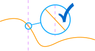

Calculus

The word Calculus comes from Latin meaning "small stone",
Because it is like understanding something by looking at small pieces.
Differential Calculus cuts something into small pieces to find how it changes.
Integral Calculus joins (integrates) the small pieces together to find how much there is.

Read Introduction to Calculus or "how fast right now?"
Limits
Limits are all about approaching. Sometimes you can't work something out directly, but you can see what it should be as you get closer and closer!

- Introduction to Limits
- Limits and Infinity
- Evaluating Limits
- Limits (Formal Definition)
- L'Hôpital's Rule

Derivatives (Differential Calculus)
The Derivative is the "rate of change" or slope of a function.

- Introduction to Derivatives
- Slope of a Function at a Point (Interactive)
- Derivatives as dy/dx
- Derivative Plotter (Interactive)
- Derivative Rules
- Power Rule
- Product Rule
- Second Derivative and Second Derivative Animation
- Partial Derivatives
- Differentiable
- Finding Maxima and Minima using Derivatives
- Concave Upwards and Downwards and Inflection Points
- Implicit Differentiation
- Taylor Series (uses derivatives)
- (Advanced) Proof of the Derivatives of sin, cos and tan
Integration (Integral Calculus)
Integration can be used to find areas, volumes, central points and many useful things.

- Introduction to Integration
- Graphical Intro to Derivatives and Integrals
- Integration Rules
- Integration by Parts
- Integration by Substitution
- Definite Integrals
- Arc Length
- Integral Approximations
- Integral Approximations Calculator and Graph
- Solids of Revolution by Disks and Washers
- Solids of Revolution by Shells
- Fourier Series and Fourier Series Grapher
Differential Equations
In our world things change, and describing how they change often ends up as a Differential Equation: an equation with a function and one or more of its derivatives:

- Introduction to Differential Equations
- Differential Equations Solution Guide
- Separation of Variables
- First Order Linear Differential Equations
- Homogeneous Differential Equations (Homogeneous Functions)
- The Bernoulli Differential Equation
- Exact Equations and Integrating Factors
Second Order Differential Equations:
- Second Order Differential Equations
- The Method of Undetermined Coefficients
- The Method of Variation of Parameters
If you want more Calculus topics covered, let me know which ones.
Bonus Topic